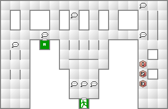
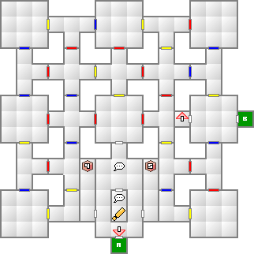
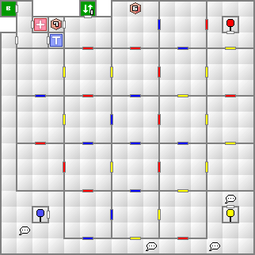
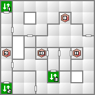
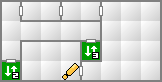

奇病に冒された人間が出てくる裏口への扉は閉ざされている。この扉を開けるには、あかねモールの東側の商品棚の中にある裏口のカギが必要になる。このカギは商品棚のほう、つまり西側を向いていないと発見できないので注意。
第一倉庫では3本のレバーのうち2本を動かすことでシャッターを開くことが出来る。それぞれレバーの色に対応したシャッターが開く。次の倉庫へ進むには、黄色と青のレバーを操作すればよい。
次の倉庫では青と黄色のレバーしか無いように見えるが、黄色を操作して奥に進むことで赤いレバーを発見することができる。これを操作することで地下へのエレベーターが使用可能になる。
シリーズお馴染みの悪魔。タル・カジャ所持に加えて、このレベルでは結構高い攻撃力を誇る。そのまま使っても良いし、他の上位悪魔にタル・カジャを継承させるために作ってもいいだろう。





| 妖魔シワンナ(32) | 妖精レプラホーン(33) | 夜魔ワイルド・ハント(33) |
| 妖鬼ヨモツイクサ(35) | 鬼女ジャヒー(34) | 邪神ミシャグジさま(35) |
| 凶鳥カマソッソ(36) | 邪鬼ガシャドクロ(34) | 邪龍トゥナ(31) |
| 悪霊ディブク(32) | 外道アーバンテラー(31) |
| 天使パワー(36) | 妖魔ロイチェクタ(44) | 龍王ヴィーヴル(36) |
| 魔獣カソ(37) | 妖鬼ヨモツイクサ(35) | 鬼女ジャヒー(34) |
| 邪神パチャカマク(41) | 邪神ミシャグジさま(35) | 凶鳥カマソッソ(36) |
| 妖獣ピアレイ(37) | 邪鬼ガシャドクロ(34) | 幽鬼グレイマン(37) |
| 天使パワー(36) | 妖鳥タンガタ・マヌ(39) | 龍王ヴィーヴル(36) |
| 魔獣カソ(37) | 地霊ドヴェルガー(38) | 堕天使ハルパス(40) |
| 妖鬼ヨモツイクサ(35) | 鬼女ジャヒー(34) | 邪神パチャカマク(41) |
| 凶鳥カマソッソ(36) | 凶鳥カマソッソ(36) | 妖獣ピアレイ(37) |
| 邪龍ピュートーン(39) | 幽鬼グレイマン(37) |
外道アーバンテラー、幽鬼グレイマン、鬼女ジャヒーと、物理攻撃を反射してくる悪魔が3体も出現する。調子に乗ってAUTOで戦闘して反射などされないように。もし雷神剣を使ってる場合は注意すること。雷神剣はあくまでも感電効果が付いた剣なので、相性は電撃ではなく斬撃である。